SPACE OS · lo que entró en septiembre de 2026
Las imágenes son de una base de demostración, no de tu instalación.
Los nombres de empresas, pantallas, correos (terminados en .invalid) y RFC
(empiezan por DMO) son inventados. Si un botón se llama distinto en tu
instalación, manda lo que ves en tu instalación.
Tres pasos no tienen imagen porque no se pueden reproducir en una
instalación local: la primera entrada con Google (1.1), emitir un comprobante (4.2,
pasos 1-4) e instalar una versión nueva (6.3). El motivo de cada uno está en
manuales/capturas-pendientes.md.
Las imágenes envejecen. Si la aplicación cambió después de la fecha de arriba, vuelve a
generarlas: manuales/capturas-2026-09-18.spec.ts las rehace todas y
node manuales/armar-pdf.mjs arma este PDF otra vez.
Este manual cubre seis cosas nuevas que aparecieron en SPACE OS a lo largo de septiembre de 2026:
Todo lo demás —entrar con tu correo, el inventario, los arrendadores, las propuestas, las campañas, las órdenes de trabajo, la facturación y la cobranza— funciona como siempre y no se repite aquí.
Éste es el único manual de usuario vigente
Los manuales anteriores se retiraron el 24 de septiembre de 2026 para que no hubiera varias versiones compitiendo. Si algo de lo que no cubre este documento te hace falta por escrito, pídelo: es un hueco conocido, no un descuido de tu instalación.
Los nombres de botones, pantallas y avisos van entre comillas, tal como aparecen en pantalla.
2026-09-21 · recorrido delante de la aplicación, con capturas
Este manual se volvió a caminar completo con la base de demostración (demo-rentabilidad, sembrada con scripts/semilla-demo.mjs) y la app en next build && next start — no en next dev: la CSP bloqueante del 28/08 usa unsafe-eval implícitamente en modo desarrollo (Fast Refresh) y ese modo deja el formulario de acceso sin reaccionar, con el botón «Entrar» permanentemente deshabilitado. No es un defecto de este manual; es un defecto del entorno de desarrollo local y se reporta aparte.
Las capturas están en capturas-2026-09-18/, junto a este archivo, y el guion que las toma —re-ejecutable— es manuales/capturas-2026-09-18.spec.ts. Los cinco textos entre comillas que quedaban por confirmar ya están confirmados mirando la pantalla, y quedan escritos donde corresponden y también en ## PENDIENTES, al final, con la cita literal. Lo que no cambia: si un botón se llama distinto en tu instalación, manda lo que ves en tu instalación — esto se verificó contra UNA base de demostración, no contra la tuya.
2026-09-24 · tres apartados que ese recorrido NO cubrió
Los apartados 1, 6 y 7 se añadieron el 24 de septiembre y no entraron en la pasada del 21: se escribieron leyendo el código, sin abrir la aplicación y sin capturas. Los textos entre comillas y los permisos están medidos; lo que falta es verlos en pantalla. El detalle, con las citas, está en ## PENDIENTES.
---
Cualquier usuario que entre con Google. En la práctica, el Dueño: es la cuenta que en muchas instalaciones entra solo por ahí.
Si entras con Google no tienes contraseña con la que volver. Los códigos de recuperación son la única llave que te queda el día que pierdas el acceso a esa cuenta.
Empiezas en: la pantalla que el sistema te pone delante la primera vez que entras con Google. No se puede esquivar: hasta que confirmes que los guardaste, no puedes trabajar.
Vas a conseguir: una lista de códigos que te deja entrar sin Google.
Salió bien si: entras a tu pantalla de siempre y el sistema deja de pedírtelo.
Se muestran UNA vez, y no hay segunda oportunidad
En cuanto sales de esa pantalla no vuelven a mostrarse: de cada código solo queda guardada una huella con la que comprobarlo. Si cierras la ventana antes de copiarlos, la única salida es generar otros — y generar otros anula los que tuvieras.
Cada código sirve una sola vez. Al usar uno, el sistema te dice cuántos te quedan; es a propósito, para que no gastes el último sin enterarte.
Empiezas en: la misma pantalla de códigos de recuperación, a la que vuelves cuando quieras.
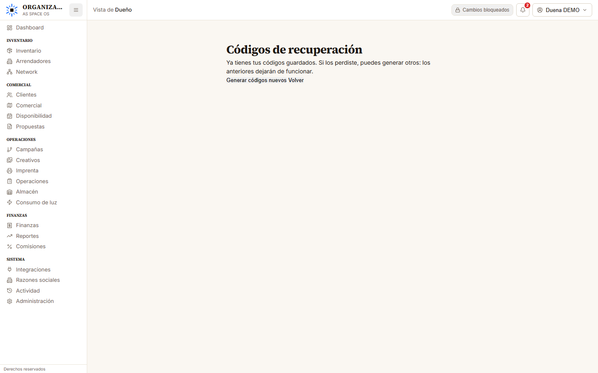
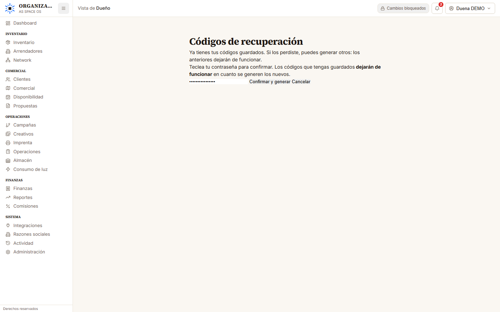
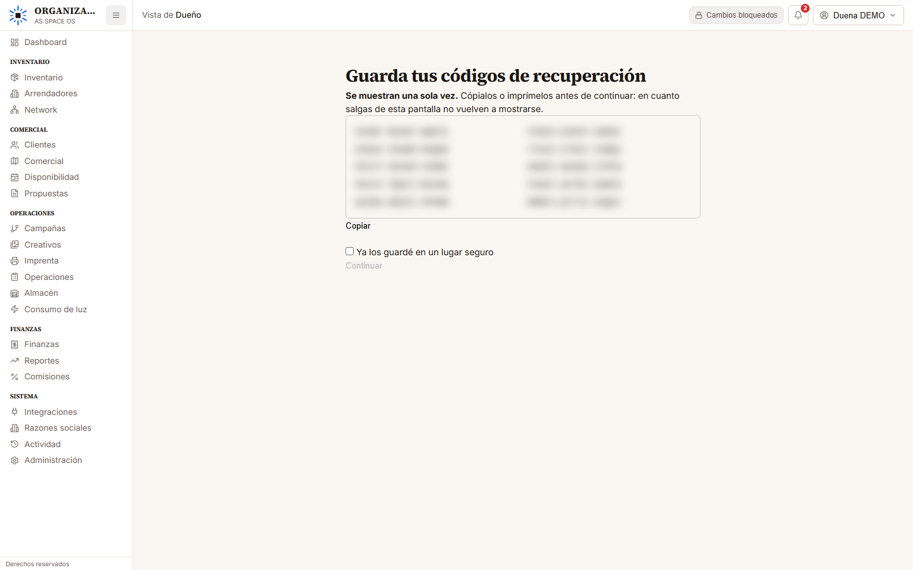
Salió bien si: aparece una lista nueva de códigos.
Los códigos viejos dejan de funcionar en ese mismo momento
Si los tenías impresos, tira ese papel: ya no abren nada. Por eso pedir el primer lote no lleva contraseña y pedir otro sí — el segundo invalida en silencio lo que alguien tiene guardado.
Al intentar entrar con tu contraseña verás: «Esta cuenta entra con Google. Usa el botón de Google, o un código de recuperación si perdiste el acceso a esa cuenta.»
No es una contraseña mal tecleada: a esa cuenta se le cerró la entrada por contraseña a propósito, porque es la de más privilegio. Entra con «Continuar con Google».
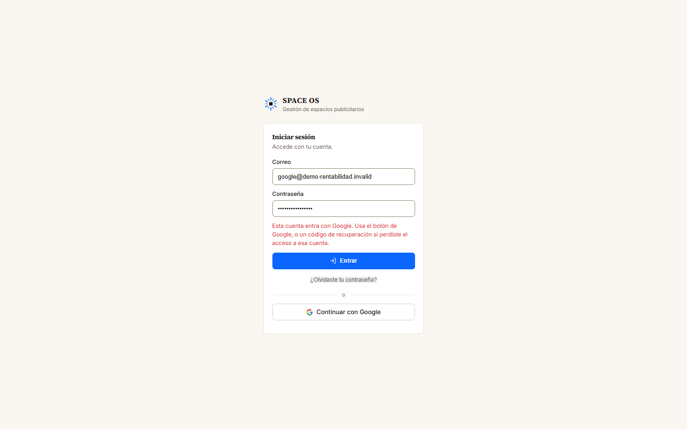
Tu contraseña sigue sirviendo, pero para otra cosa
Aunque no te deje entrar con ella, la contraseña se sigue pidiendo para los cambios sensibles —facturar, registrar un pago, tocar un contrato—. Ver el apartado 4.1. Si nunca te pusieron una, pídesela a quien administra tu cuenta antes de necesitarla.
Hoy no hay dónde teclear un código para entrar
El sistema acepta los códigos, pero la pantalla de acceso no tiene todavía ningún campo ni enlace donde escribirlos. Guárdalos igual —son lo que permitirá recuperar la cuenta en cuanto exista esa puerta—, pero si pierdes hoy tu cuenta de Google, tendrás que pedirle ayuda a quien administra tu instalación. Queda anotado en ## PENDIENTES.
---
Una empresa de publicidad exterior casi nunca es una sola sociedad. Una paga las rentas a los arrendadores, otra compra el equipo, otra hace los trámites con gobierno, y la operación y las ventas a veces van juntas y a veces no.
Hasta el 17 de septiembre el sistema solo guardaba una. Ahora guarda las que hagas falta, y sabe qué papel juega cada una.
Los papeles son cinco y fijos: arrendamientos, activos, licencias, operación y ventas. No se pueden crear, renombrar ni borrar desde la aplicación.
Solo si tu cuenta tiene permiso de Administración. En la práctica, el Dueño.
Empiezas en: la pantalla de bienvenida, que aparece la primera vez que entras a una instalación recién estrenada.
Vas a conseguir: que queden creadas tus razones sociales, cada una con su papel.
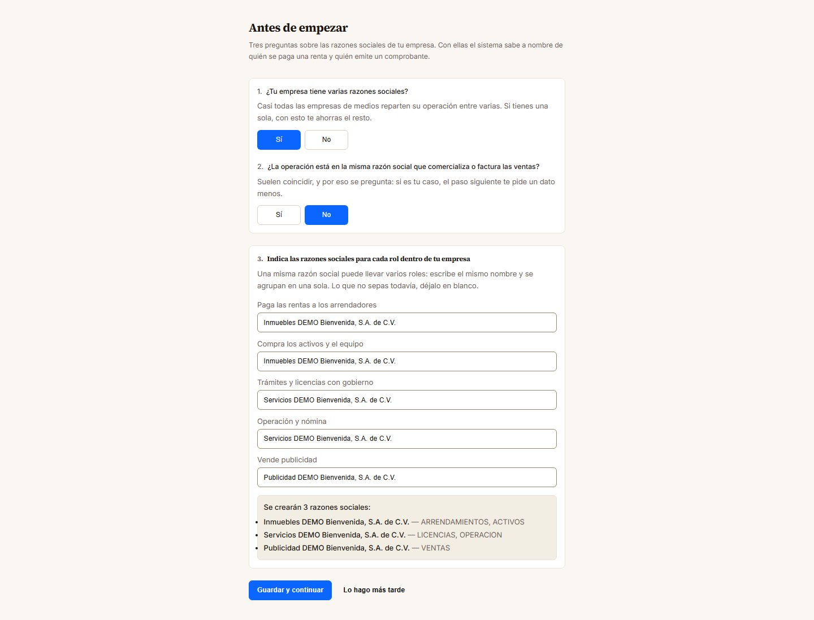
Las dos primeras preguntas existen para ahorrarte la tercera. Esto es lo que cambia:
| Si contestas... | y luego... | tecleas |
|---|---|---|
| Una sola razón social | no se te pregunta | un solo nombre, que se queda con los cinco papeles |
| Varias | operación y ventas coinciden | cuatro nombres |
| Varias | operación y ventas separadas | cinco nombres |
Salió bien si: la pantalla deja de ofrecerte el cuestionario y te lleva a la pantalla «Razones sociales», donde ves las que acabas de crear.
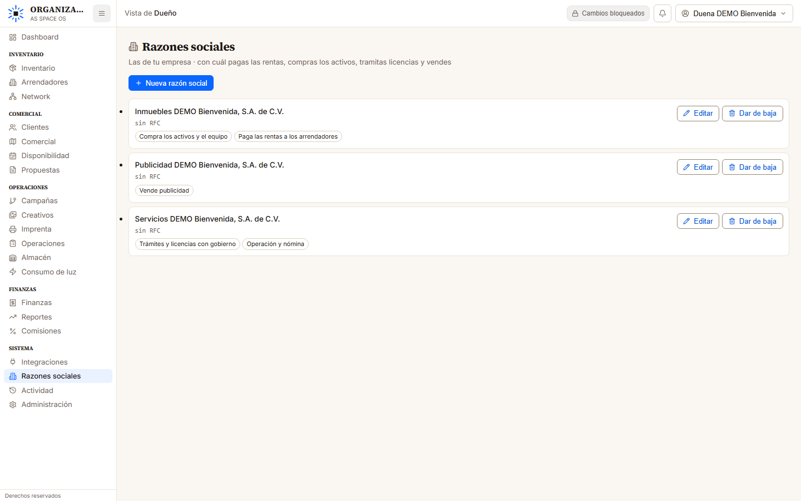
## PENDIENTES.Puedes escribir la misma empresa en varios campos
Es el caso normal, no la excepción. Si la misma sociedad paga rentas y compra activos, escribe su nombre en los dos campos: el sistema entiende que es una sola razón social con dos papeles, no dos.
Y no le molestan las diferencias de escritura. «ACME, S.A. de C.V.» y «Acme SA de CV» son la misma empresa para el sistema. Lo que se guarda es como tú lo escribiste la primera vez, no una versión normalizada.
El cuestionario se contesta UNA vez
En cuanto existe una razón social, el cuestionario deja de ofrecerse y ya no se puede volver a enviar. Lo que se cambia después se cambia en «Razones sociales» (apartado 2.2), no aquí.
Y se guarda todo junto o no se guarda nada: si algo falla a la mitad, no queda ninguna razón social creada y puedes volver a intentarlo.
La captura de esta nota está en el paso 3, arriba. Se tomó el 2026-09-24 con una organización recién creada y sin ninguna razón social (demo-bienvenida, que prepara manuales/preparar-base-2026-09-18.mjs).
Empiezas en: la pantalla de bienvenida.
Salió bien si: entras a trabajar con normalidad. La aplicación funciona igual sin razones sociales capturadas.
Nadie queda encerrado en esta pantalla. Si el dato lo tienes que preguntar a tu contador, sáltatela y vuelve cuando lo tengas.
Mientras no las captures, verás «Sin asignar»
Los contratos y los comprobantes seguirán funcionando, pero saldrán sin razón social. No es un error: ver el apartado 5.
---
Solo si tu cuenta tiene permiso de Administración.
Empiezas en: el menú lateral, entrada «Razones sociales».
En esta pantalla das de alta una razón social nueva, editas las que ya tienes, les cambias el papel, las das de baja y las vuelves a activar.
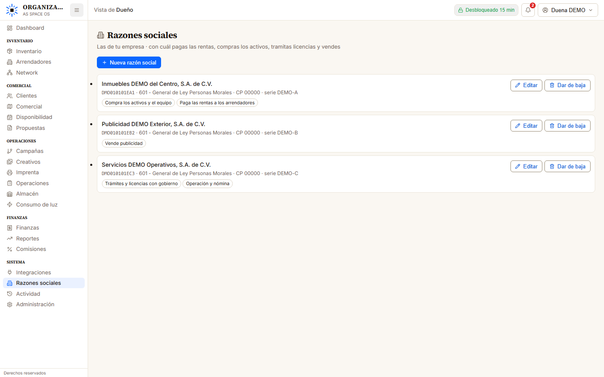
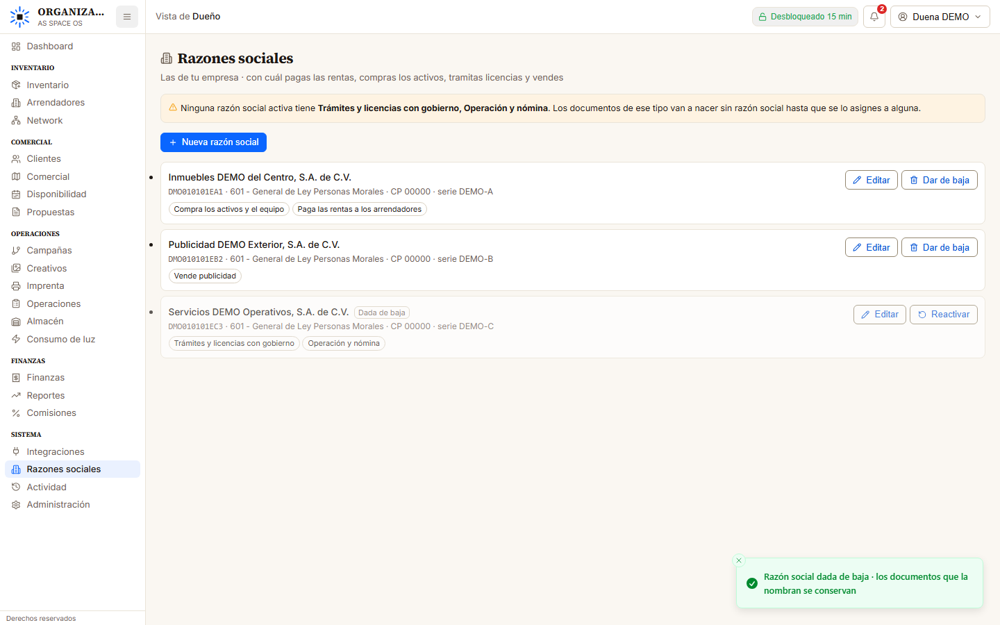
Salió bien si: desaparece del listado normal y deja de ofrecerse al asignar contratos y comprobantes nuevos.
Dar de baja la única que tenía un papel deja ese papel sin dueño
Si la sociedad que das de baja era la única que vendía, a partir de ese momento el sistema deja de proponerte nada al emitir un comprobante, y hay que elegir a mano cada vez. La pantalla te lo avisa, pero el efecto se nota semanas después y en otra pantalla.
La baja no borra nada. Los contratos y los comprobantes que ya la tenían asignada la conservan, y la puedes volver a activar desde la misma pantalla. No hace falta capturarla otra vez con el mismo nombre: eso crearía un duplicado, y el sistema lo rechaza.
| Aviso | Qué significa | Qué hacer |
|---|---|---|
| Papel sin dueño | Ninguna razón social activa tiene ese papel | Asígnaselo a alguna, o acepta elegir a mano cada vez |
| Papel compartido | Dos o más lo tienen | El sistema no propondrá ninguna: tendrás que elegir en cada documento |
Ninguno de los dos te impide trabajar. Los dos te dicen por qué el sistema deja de sugerirte una razón social donde antes te la sugería.
2026-09-21 · Los dos avisos, provocados y confirmados palabra por palabra
En la demostración cada papel tiene una sola dueña, así que hubo que forzar el estado: se dio de baja «Servicios DEMO Operativos» (única dueña de OPERACION y LICENCIAS, lo que deja esos dos papeles sin dueño) y se le añadió ARRENDAMIENTOS a «Publicidad DEMO Exterior», que ya lo tenía «Inmuebles DEMO del Centro» (papel compartido).
Papel sin dueño, literal: «Ninguna razón social activa tiene Trámites y licencias con gobierno, Operación y nómina. Los documentos de ese tipo van a nacer sin razón social hasta que se lo asignes a alguna.»
Papel compartido, literal: «Paga las rentas a los arrendadores lo tienen dos o más. Cuando hay varias con el mismo papel el sistema no propone ninguna, así que habrá que elegirla a mano en cada contrato o comprobante.»
Cita: apps/web/components/demo/razones-sociales/GestionEntidadesFiscales.tsx:284-303. Y de paso: las etiquetas de los papeles salen con acento («Trámites», «Operación y nómina»), así que la migración 20260921_corrige_acentos_catalogo_roles_entidad.sql (D8 de docs/Supervision/ABIERTOS.md) ya estaba aplicada en el entorno donde se hizo esta pasada.
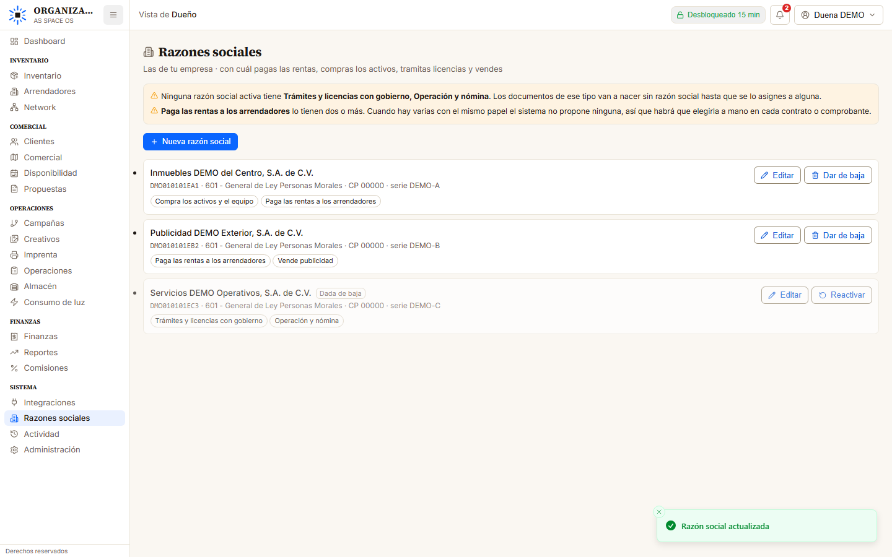
---
Empiezas en: la ficha del contrato de arrendamiento.
Vas a conseguir: que quede escrito a nombre de qué sociedad tuya se paga esa renta.
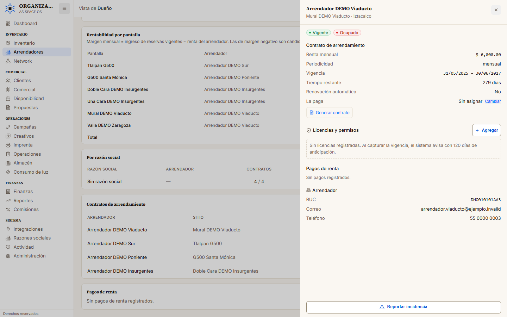
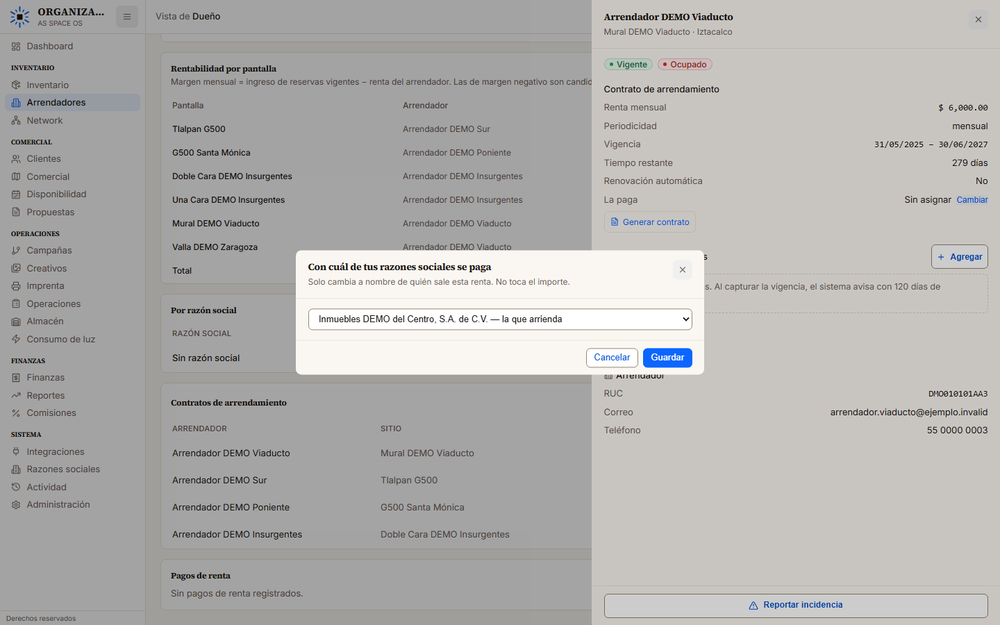
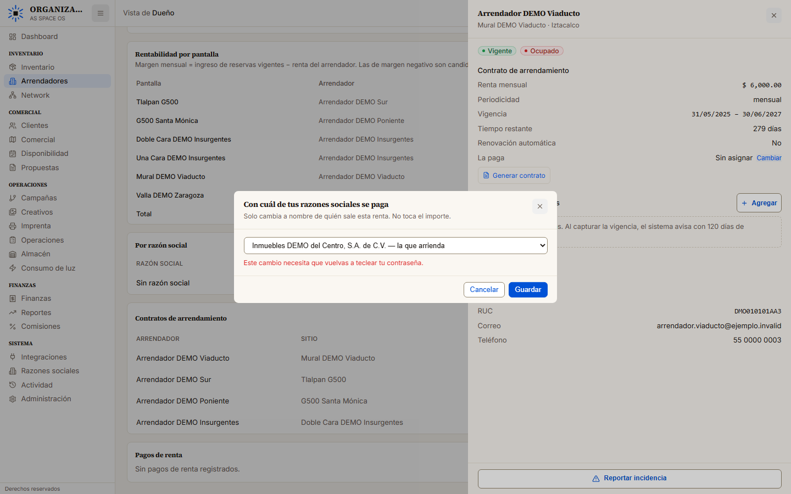
## PENDIENTES.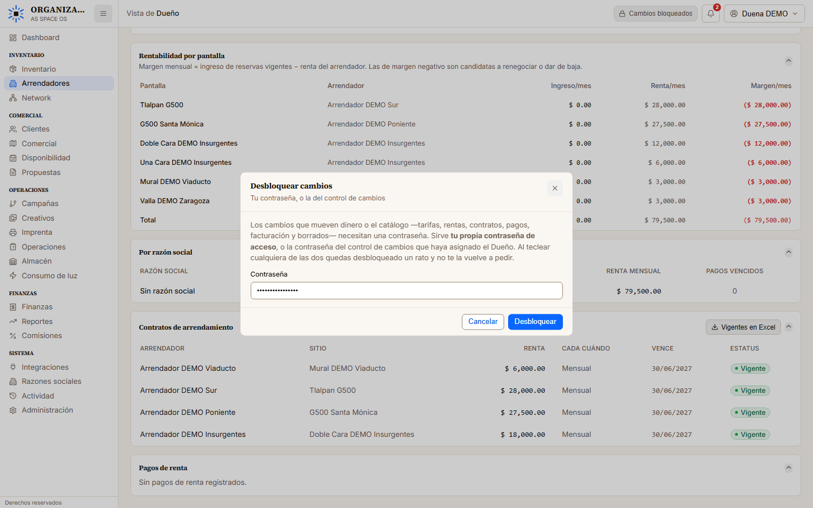
Salió bien si: «La paga» deja de decir «sin asignar» y muestra el nombre de la razón social que elegiste.
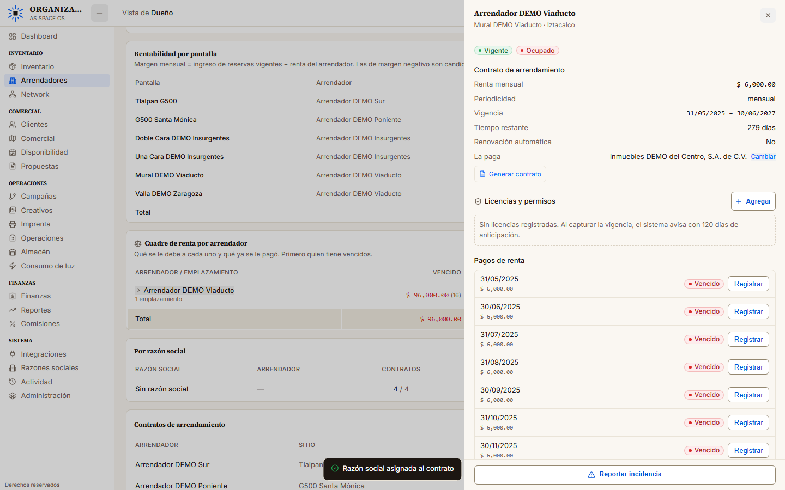
## PENDIENTES.El sistema te va a pedir tu contraseña otra vez
Asignar la razón social que paga viaja por el mismo camino que el importe de la renta, y ese camino pide volver a teclear tu contraseña antes de guardar. Es el mismo candado que ya conoces de facturar y de registrar un pago.
Si entraste con Google y nunca te pusieron contraseña, pídesela a quien administra tu cuenta antes de sentarte a asignar razones sociales.
Si el contrato está incompleto, el selector también aparece dentro de «Completar información», junto con el resto de los datos que faltan.
Las capturas de esta nota están en los pasos 2 a 5, arriba.
Empiezas en: la campaña que vas a facturar.
Salió bien si: bajo el folio del comprobante aparece «Emite» con el nombre de la razón social.
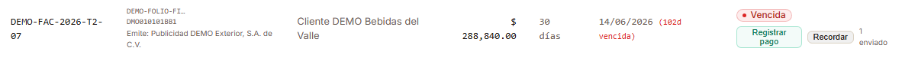
manuales/capturas-pendientes.md.La emisora se decide al emitir, y después no se cambia
No existe forma de reasignar la razón social de un comprobante ya emitido. Si te equivocas, el documento queda emitido a nombre de quien elegiste. Revísalo antes de confirmar.
Elegir la emisora no cambia ni un importe
El subtotal, el impuesto y el total los sigue calculando el sistema a partir del presupuesto de la campaña y de la tasa del cliente. La razón social no entra en ningún cálculo.
El sistema no adivina. La regla es ésta:
| Situación | Qué hace el sistema |
|---|---|
| Una sola razón social tiene el papel de arrendamientos | La propone al asignar un contrato |
| Una sola tiene el papel de ventas | La propone al emitir un comprobante |
| Dos o más lo tienen | No propone ninguna: eliges tú |
| Ninguna lo tiene | No propone ninguna |
Con dos candidatas, elegir una sería emitir a nombre de la sociedad equivocada sin que nadie lo hubiera decidido. Por eso el sistema prefiere no proponer.
Y si el documento ya tiene una razón social asignada, ésa es la que se te muestra, aunque esté dada de baja. Lo que ya decidiste manda sobre la sugerencia.
El selector te ofrece todas las razones sociales activas, no solo las que tienen el papel. El papel decide la sugerencia, no lo que está permitido.
---
Los contratos y los comprobantes creados antes del 17 de septiembre de 2026 no tienen razón social, y se muestran así: «sin asignar».
Es deliberado. Nadie sabe a nombre de qué sociedad se hicieron, y el sistema no se lo inventa. Una razón social puesta a la ligera en un documento fiscal viejo es peor que un hueco declarado.
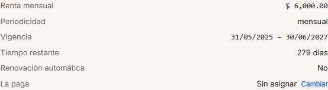
Qué hacer con ellos:
«Razon social no disponible» es otra cosa
Si en lugar de «sin asignar» lees «Razon social no disponible», el documento sí tiene una razón social asignada: lo que pasa es que la pantalla todavía no acabó de cargar su nombre. Recarga la pantalla. No es lo mismo que un documento sin asignar, y por eso el sistema lo dice distinto.
---
Solo si tu cuenta tiene permiso de Administración. Ver el estado exige permiso de ver; cambiar el modo o instalar exige permiso de aprobar.
Empiezas en: «Administración», pestaña «Configuración». La tarjeta «Actualizaciones» es la primera de esa pestaña.
SPACE OS se pone al día solo, de madrugada. Esta tarjeta existe para que el dueño de la instalación pueda decidir otra cosa: ver qué versión hay disponible y elegir cuándo entra.
La tarjeta lo dice en una frase, y de esa frase sale si tienes algo que hacer o no.
| Lo que dice | Qué significa | Qué te toca |
|---|---|---|
| «Al día: corre … la misma que hay disponible» | No hay nada nuevo. Es la única frase en verde | Nada |
| «Hay una versión nueva disponible … Esperando tu aprobación para instalarla» | Estás en modo con aprobación y hay novedad | Decidir (apartado 6.3) |
| «Hay … disponible. Se instalará sola en la próxima ventana automática, de madrugada (04:17)» | Estás en modo automática | Nada |
| «Aprobaste …: se instalará en los próximos minutos, o de madrugada a más tardar» | Ya decidiste | Esperar |
| «Lo que aprobaste ya no es lo disponible: salió una versión más nueva» | Tu aprobación caducó | Volver a aprobar, o no se instalará nada |
| «Esta instancia todavía no se ha comprobado contra el registro» | Todavía no se sabe si hay novedad | Volver más tarde |
| «Se comprobó … pero el actualizador no pudo leer el digest de la imagen …» | Hay un problema que no se arregla desde esta pantalla | Avisar a quien opera el servidor |
Debajo de la frase hay cuatro datos: la versión instalada, la disponible, cuántas migraciones trae —los cambios que hay que aplicarle a la base de datos— y cuándo se comprobó por última vez.
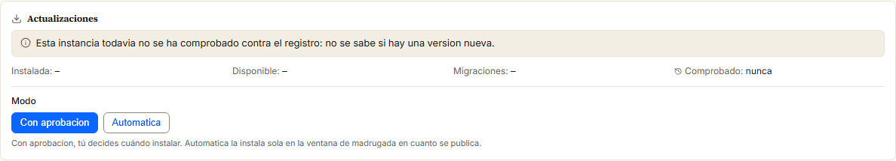
manuales/capturas-pendientes.md.Un guion en «Migraciones» no quiere decir cero
Significa que no se pudieron contar, no que no haya ninguna. Es justo la diferencia que conviene mirar antes de pulsar un botón que corta el servicio.
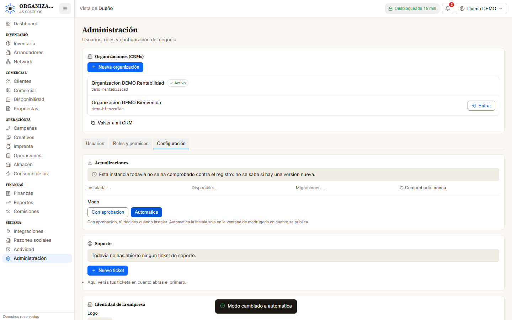
Salió bien si: aparece el aviso «Modo cambiado a con aprobacion» o «Modo cambiado a automatica», y el botón que elegiste queda marcado.
«Con aprobación» no es «más adelante»: es «hasta que alguien entre»
En ese modo la versión nueva espera indefinidamente. Si nadie abre esta pantalla, la instalación se queda donde está — que puede ser justo lo que quieres, pero conviene saberlo.
Empiezas en: la misma tarjeta, con una versión esperando aprobación.
Salió bien si: aparece el aviso «Instalacion aprobada: se instalara en los proximos minutos» y la frase de arriba pasa a decir que aprobaste esa versión.
Instalar corta el servicio y cambia la base de datos
Mientras dura la instalación nadie de tu empresa puede usar la aplicación. Elige una hora en la que no estorbe; si no tienes una razón para instalar ya, deja que entre de madrugada.
Aprobar no es instalar en ese segundo
Lo que guardas es una aprobación: la instalación la hace el servidor en los minutos siguientes, o en la ventana de madrugada a más tardar. Y si mientras tanto sale una versión todavía más nueva, tu aprobación deja de valer: la tarjeta te lo dice y hay que aprobar otra vez.
Si no ves la tarjeta, en su lugar leerás: «Ver y decidir la actualización de esta instancia está reservado a quien tenga el permiso de Administración → ver. Pídeselo a quien administre los roles y permisos de tu organización.»
---
Solo si tu cuenta tiene permiso de Administración. Ver los tickets exige permiso de ver; abrir uno exige permiso de crear.
Empiezas en: «Administración», pestaña «Configuración», tarjeta «Soporte», justo debajo de «Actualizaciones».
Hasta ahora un fallo se contaba por teléfono y no quedaba escrito en ninguna parte. Desde esta tarjeta se escribe, queda con fecha y estado, y la respuesta se lee sin salir de la aplicación.
Quien encuentra el fallo casi nunca es quien puede reportarlo
Solo quien puede abrir «Administración» puede abrir un ticket. Un operario que encuentra un fallo montando una lona, o quien captura una campaña y ve algo raro, no tiene esta pantalla: tiene que contárselo a quien administre el sistema en tu empresa, y esa persona abre el ticket. Conviene decirlo en la capacitación, o el fallo se queda en una conversación de pasillo.
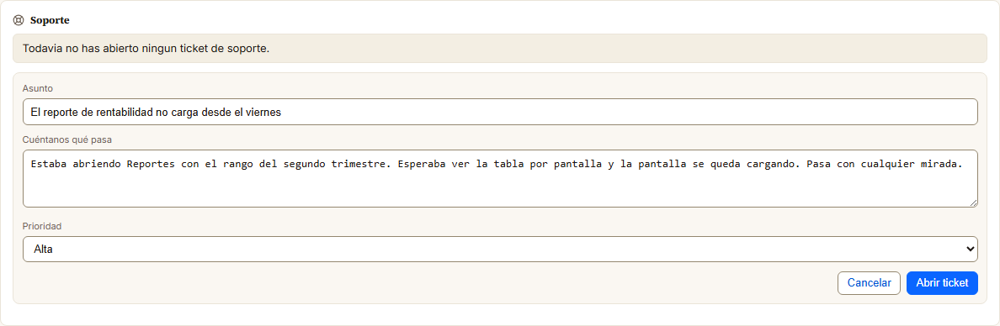
Salió bien si: aparece el aviso «Ticket abierto» con su folio, y el ticket encabeza la lista marcado como «Abierto».
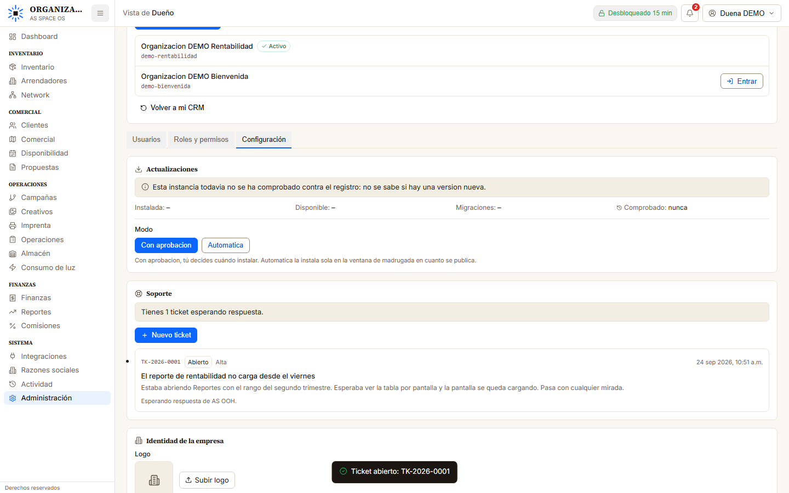
El asunto y el texto son obligatorios
El botón no se activa hasta que los dos tienen algo escrito. No es un capricho del formulario: un ticket sin texto no se puede atender.
Empiezas en: la misma tarjeta.
Arriba de la lista, una frase te resume la situación: cuántos tickets están esperando respuesta, o «Todos tus tickets estan contestados» cuando no queda ninguno.
Cada ticket muestra su folio, su estado —«Abierto», «En proceso», «Resuelto» o «Cerrado»—, su prioridad y su fecha. Debajo de tu texto verás una de dos cosas:
Salió bien si: el ticket que te importaba muestra su recuadro de respuesta.
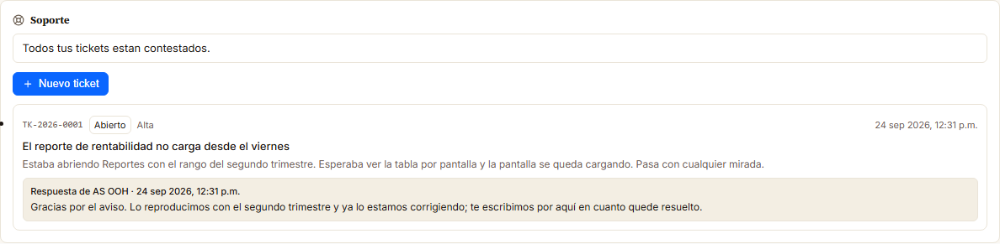
PATCH /api/tickets), llamada contra la instalación local; el panel en sí no sale en la imagen. Fíjate en que el ticket sigue «Abierto»: contestar no lo resuelve (7.3).Nadie te avisa cuando te contestan
No llega correo ni notificación. Si estás esperando una respuesta, entra a mirar.
---
Solo si tu cuenta tiene permiso de Operaciones.
La regla es un recibo por predio y por mes. El medidor normalmente es del predio, no de cada pantalla, así que el importe se captura una vez y el sistema lo reparte entre las pantallas de ese predio igual que reparte la renta.
Quien captura el recibo no es quien lee el reporte
Un perfil de Operaciones teclea el recibo; el margen que ese recibo cambia lo ve un perfil de Finanzas o el Dueño. Son dos permisos distintos a propósito. Si capturas recibos y no puedes abrir el reporte de rentabilidad, no es una falla.
Empiezas en: la pantalla de consumo de luz.
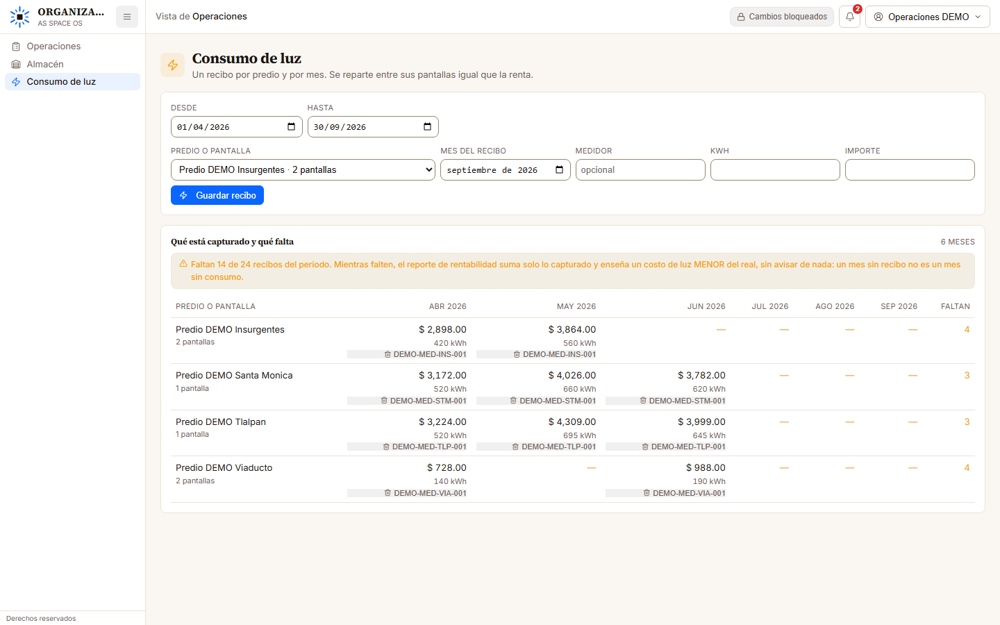
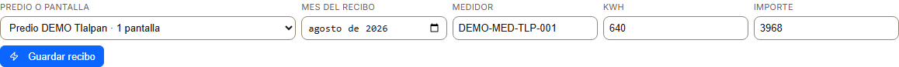
Salió bien si: la celda de ese predio y ese mes deja de estar en ámbar y muestra el importe, el consumo y el medidor. El contador de recibos que faltan baja en uno.
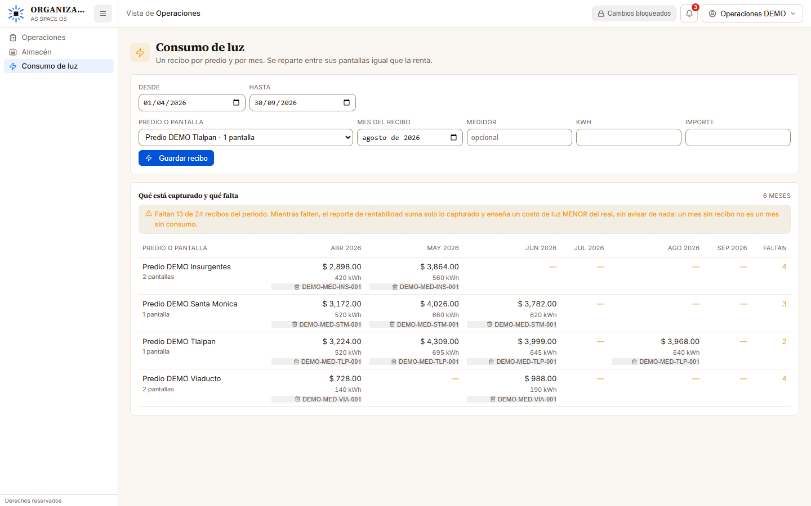
Al guardar, el predio y el mes se quedan puestos y las cifras se limpian. Está pensado para capturar un lote de recibos seguidos sin volver a elegir el predio cada vez.
Las cifras se limpian a propósito, y conviene entender por qué
Si el importe anterior se quedara en el campo, sería facilísimo teclear dos veces la misma cantidad sin darte cuenta. Un importe repetido no da ningún error: solo hace que el costo de la luz de ese mes salga más alto de lo que fue.
Las capturas de esta nota están al principio del apartado 8.1 y en el paso 5.
Si el predio tiene más de un medidor, captura un recibo por cada uno, con su número de medidor anotado. El sistema los suma.
No los sumes tú en una sola línea. El total quedaría bien, pero perderías el detalle de qué consume cada medidor.
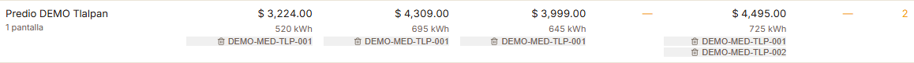
No hay edición. Si te equivocaste, borra el recibo y captúralo de nuevo.
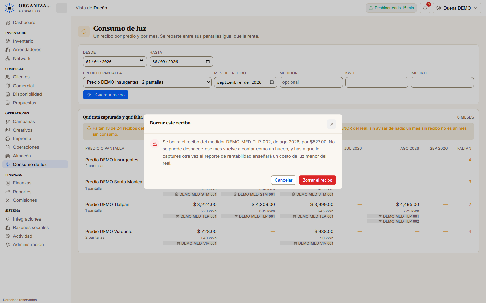
## PENDIENTES.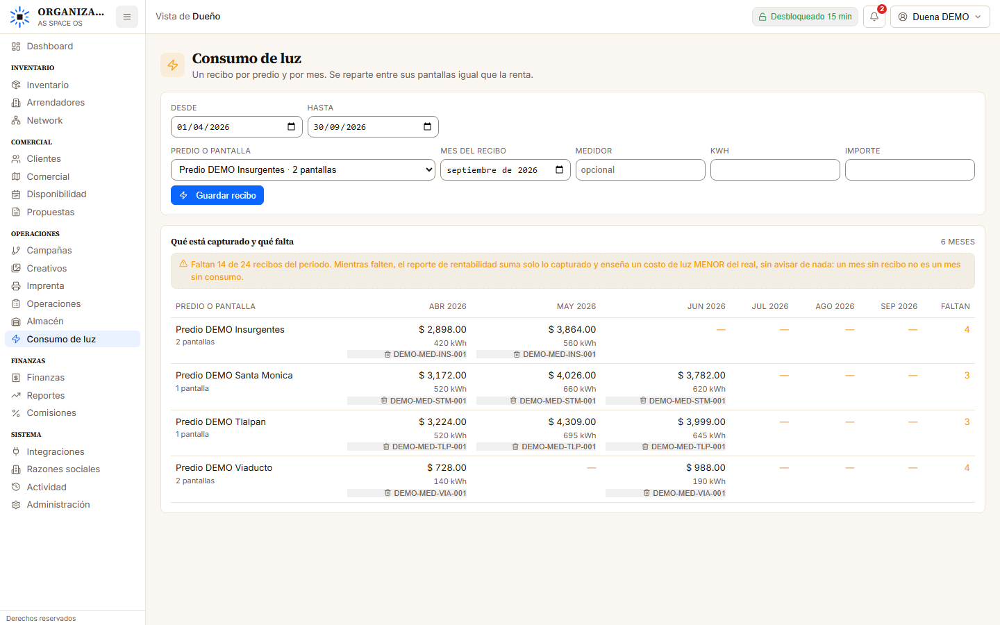
El borrado existe precisamente porque no puedes capturarlo dos veces
El sistema rechaza el mismo recibo repetido, así que un importe con un cero de más se quedaría inflando el costo de ese mes para siempre si no pudieras borrarlo.
2026-09-21 · El paso 2 dice mal las cosas: NO hay confirmación
Verificado mirando la pantalla: al pulsar el icono de papelera, el recibo se borra de inmediato, sin ningún cuadro de diálogo que pedir aceptar. No hay «¿Seguro que quieres borrar…?», ni nativo del navegador ni de la aplicación. El botón, además, no lleva un texto visible que diga «Borrar»: es solo el icono y el número de medidor, con un title="Borrar este recibo" que solo se lee al pasar el mouse por encima.
Esto es lo contrario de lo que dice el paso 2 arriba, y es la respuesta a la pregunta que este manual tenía pendiente. Se deja la corrección aquí, sin tocar el paso, porque corregir el cuerpo del manual es decisión de quien lo revise.
Cita: apps/web/components/demo/energia/RejillaCaptura.tsx:84-95 (el botón, sin confirm() alguno) y apps/web/app/(app)/(shell)/energia/page.tsx:127-138 (borrar(), que llama al DELETE sin preguntar antes).
Y hay un segundo hallazgo, más grave, de permisos: el botón de borrar se pinta igual para cualquier rol, pero borrar exige exigir('operaciones', 'aprobar') (app/api/energia/consumos/[id]/route.ts:24) y el rol OPERACIONES —el mismo al que este apartado dice que le toca esta pantalla— solo tiene ver y crear sobre operaciones, no aprobar. Un perfil de Operaciones que pulsa la papelera para corregir SU PROPIO error no puede: recibe 403 («No tienes permiso para esta acción») y, como ese mensaje comparte el mismo estado que el de «no cargó la pantalla», la rejilla entera desaparece y se sustituye por «No se pudo cargar la captura» — no un aviso junto al botón, sino la pantalla completa. Verificado en vivo con una cuenta OPERACIONES real.
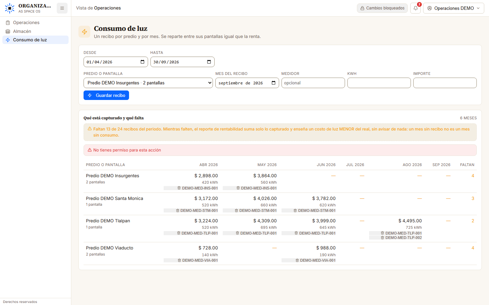
## PENDIENTES.Eso es lo más útil de esta pantalla, más que capturar.
La pantalla se organiza como una rejilla de predios por meses. Cada celda es un recibo. Las que faltan salen en ámbar y con una raya, no con un cero: un «$0.00» afirmaría que ese mes no se gastó luz, y una celda en blanco no diría nada.
Arriba verás un aviso del estilo «Faltan 18 de 18 recibos del periodo».
Salió bien si: el aviso llega a cero y no queda ninguna celda en ámbar en el periodo que te interesa.
Si no falta ninguno, el sistema también te lo dice
Lo dice en gris, no en ámbar. «No falta ninguno» y «no te lo digo» se ven igual si no hay texto, y eso no vale.
---
Solo si tu cuenta tiene permiso de Finanzas. En la práctica, el Dueño y el perfil de Finanzas.
El reporte contesta una sola pregunta —qué ingresa y qué cuesta cada cosa— y te deja mirarla de cinco formas. No son cinco reportes: es una pantalla con un selector.
2026-09-21 · Qué ve exactamente un perfil de Operaciones si lo intenta
Verificado con una cuenta OPERACIONES real: la entrada «Reportes» no aparece en su menú —el menú de Operaciones solo trae Operaciones, Almacén y Consumo de luz—, y si escribe la dirección /reportes/ a mano, no llega a verla. El sistema lo manda de vuelta a /operaciones/, su propio tablero, al instante y sin ningún mensaje de error: ni un 403 en pantalla, ni un aviso de «no tienes permiso». Simplemente nunca aparece Reportes, como si esa dirección no existiera para él.
Esto pasa ANTES de que la pantalla llegue a pedir datos al servidor: la decide el propio menú (components/demo/shell/nav.ts:138, la entrada de Reportes solo lista roles: ['DUENO', 'FINANZAS']) y la reafirma la compuerta de la aplicación (components/demo/shell/compuerta.ts:59-66 y AuthGate.tsx:73, que redirige a landingDeRol(rol) en cuanto detecta que el rol no alcanza el módulo de la ruta).
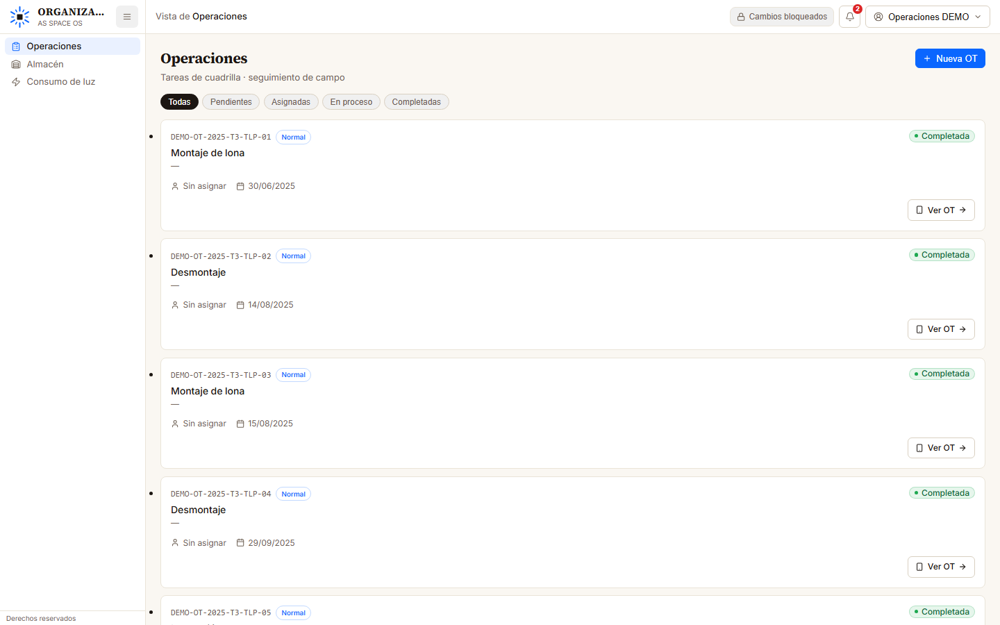
Empiezas en: el menú lateral, en la entrada de reportes.
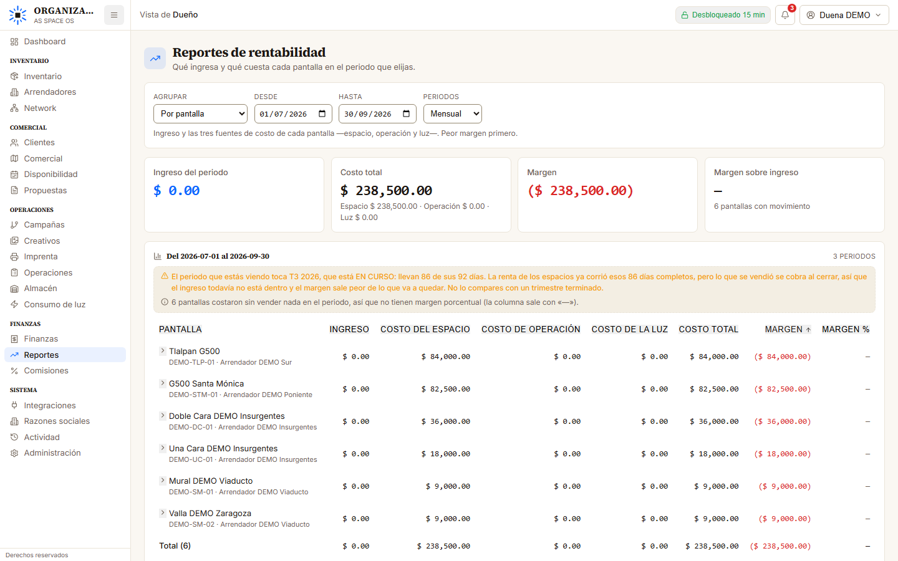
Salió bien si: aparece la tabla con una fila por pantalla —o por trimestre, según lo que elegiste—, los indicadores de arriba con el ingreso, el costo y el margen, y el pie con los totales.
Las fechas no traen valor por omisión más allá del periodo de apertura, y son obligatorias. Si pones un rango al revés, el sistema te lo dice y no calcula.
La captura de esta nota está en el paso 1, arriba.
2026-09-21 · La pantalla ya no ofrece cinco miradas: ofrece SEIS
El selector «Agrupar» trae hoy: «Por pantalla» · «Por trimestre» · «Por operación» · «Por metro cuadrado» · «Por consumo de luz» · «Por razón social». La sexta no la documenta ningún apartado de este manual — entró con el commit 30af088 («feat(reportes): la sexta dimension — por razon social»), posterior a la redacción del 18/09. No es un error de este manual en el sentido de que diga algo falso: es que quedó incompleto por un cambio de producto que llegó después. Se deja constancia aquí; añadir el apartado 9.3-bis con «Por razón social» es trabajo aparte, no de esta pasada.
Cita: apps/web/components/demo/reportes/consulta.ts:58-92 (DIMENSIONES_UI, con las seis entradas).
Esto es lo primero que vas a ver, y lo primero que hay que entender.
Al abrir, el reporte se planta en el trimestre que está corriendo ahora mismo. Y un trimestre a medias siempre se lee peor de lo que es.
El motivo es de negocio, no del sistema: la renta a los arrendadores ya corrió todos los días transcurridos, y lo que vendiste se cobra al cerrar. Así que el costo ya está dentro y el ingreso todavía no.
Por eso lo normal es que al abrir veas algo como Ingreso $0.00 y un margen en negativo. No es una pérdida real.
Encima de la tabla sale un aviso en ámbar, el primero de todos, que dice tres cosas:
Para ver cifras definitivas, mueve el rango a un trimestre que ya cerró. Cuando lo hagas, el aviso ámbar desaparece, y esa desaparición es información: te está diciendo que lo que estás viendo ya no va a cambiar.
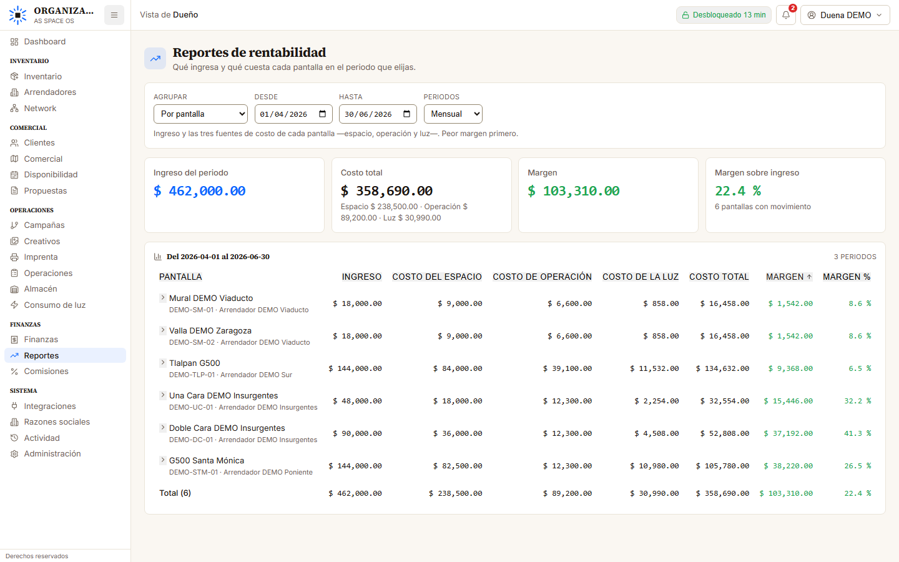
Basta un solo día de solape para que el aviso vuelva
Si estiras el rango un día dentro del trimestre en curso, el aviso reaparece. Y con razón: ese día ya trae renta pagada y todavía no trae el ingreso que lo acompaña.
2026-09-21 · El texto exacto del aviso ámbar, palabra por palabra
Verificado en pantalla el 2026-09-21, con el reporte abierto de forma natural (sin tocar el rango) en jul-sep 2026:
«El periodo que estás viendo toca T3 2026, que está EN CURSO: llevan 83 de sus 92 días. La renta de los espacios ya corrió esos 83 días completos, pero lo que se vendió se cobra al cerrar, así que el ingreso todavía no está dentro y el margen sale peor de lo que va a quedar. No lo compares con un trimestre terminado.»
Los números («83 de sus 92») cambian con la fecha en la que se mire; el resto de la frase no. Cita: apps/web/components/demo/reportes/tabla.ts:662.
Cada forma cambia las columnas de la tabla y el orden en que salen las filas. No es la misma tabla con otro título.
Una fila por pantalla. Salen primero las de peor margen.
Es la mirada que contesta «¿qué pantallas están perdiendo dinero?».
Una fila por trimestre. Salen en orden cronológico, no por importe: es una serie de tiempo, no un ranking.
Un trimestre sin movimiento sí aparece, en cero. Un hueco en una serie se lee como «faltan datos»; un cero se lee como «no pasó nada», que es la verdad.
Aquí una fila no es una pantalla
En esta mirada, cada fila es un trimestre entero con todas tus pantallas dentro. Los avisos que hablan de pantallas no salen aquí, precisamente porque dirían algo falso.
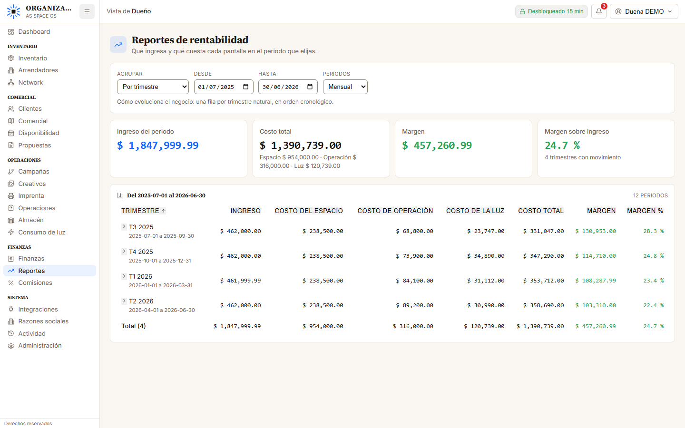
Una fila por pantalla, con cuántas visitas recibió, qué proporción de su ingreso se comió la operación y cuántas horas pasó alguien en sitio. Bajo el nombre de cada pantalla verás el desglose por tipo de visita, del estilo «Desmontaje 2 · Inspección 1».
Salen primero las de más costo de operación, no las de peor margen. Es deliberado: una pantalla con margen horrible por una renta cara no es un problema de operación, y por peor margen saldría primera tapando justo a las que sí lo son.
Ésta es la mirada que contesta «tienen las mismas campañas, pero a una van a cada rato a arreglarla».
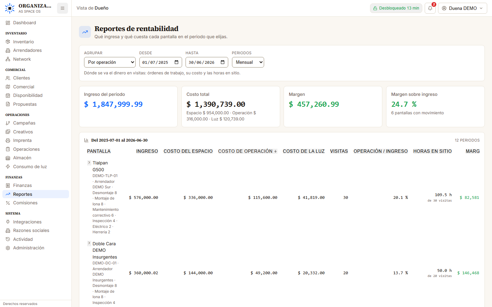
Una fila por pantalla estática, con su superficie, su ingreso por metro y su margen por metro. Salen primero las de peor margen por metro.
Lee el apartado 9.4 antes de usar esta mirada: deja pantallas fuera, y te dice cuáles.
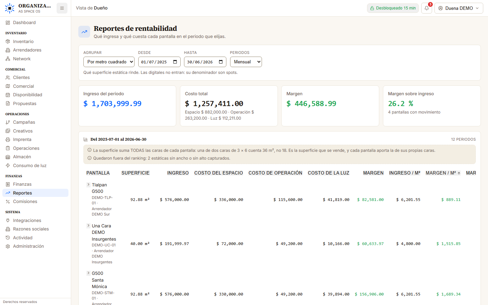
Una fila por pantalla, con los kilovatios-hora que le tocaron y su costo por kilovatio-hora. Salen primero las de más costo de energía, por el mismo motivo que la mirada por operación.
Si una pantalla no tiene consumo, su costo por kilovatio-hora sale como «—» y no como «$0.00». Un cero se leería como «aquí la luz es gratis», que es lo contrario de «no hay consumo con el que calcularlo».
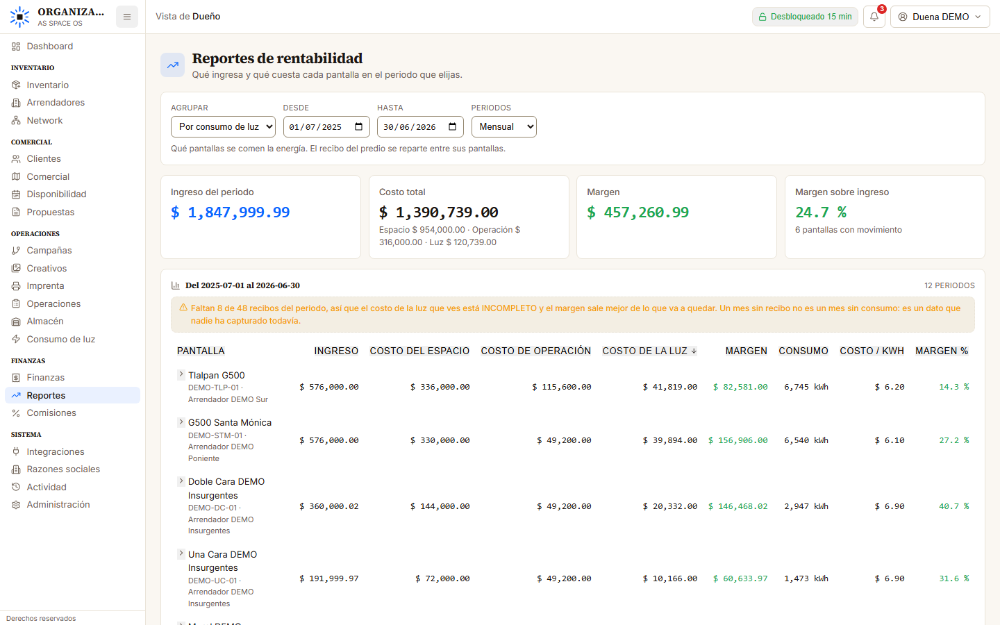
La luz cuenta en TODAS las miradas, no solo en ésta
El costo de la energía entra en el costo total y en el margen de las cinco. Si no fuera así, la misma pantalla daría dos márgenes distintos según cómo la miraras, y los dos parecerían correctos.
Ésta es la parte que más preguntas genera, y la que conviene leer despacio. Un número que miente es peor que no tener el número, así que el reporte declara sus huecos encima de la tabla en vez de disimularlos.
Son cinco avisos. El primero va en ámbar; los demás en gris.
| Aviso | Qué te está diciendo |
|---|---|
| Periodo en curso | El único en ámbar. Ver el apartado 9.2 |
| Sin contrato | Esas pantallas salen con costo de espacio en cero porque falta capturar el contrato, no porque el espacio sea gratis. Su margen se lee mejor de lo que es |
| Sin ingreso | Costaron y no vendieron. Son justo las que este reporte existe para encontrar |
| Exclusiones por metro cuadrado | Cuántas pantallas quedaron fuera del ranking por metro, y por qué |
| Convención del metro cuadrado | Qué cuenta como metro cuadrado. Ver el apartado 9.5 |
Deja fuera dos grupos, y te dice cuántas de cada uno:
El aviso sale también cuando no se excluyó ninguna. «No excluí ninguna» y «no te lo digo» se ven igual si no hay texto.
Solo se cuentan como excluidas las pantallas que habrían salido en el reporte, es decir, las que tuvieron movimiento en el periodo. Un catálogo con trescientas digitales dormidas no te dirá «excluí 300»: el recuento contesta «cuántas filas te falta ver».
Aquí el hueco es más peligroso que en el metro cuadrado, y por eso se declara con más cuidado: una pantalla sin recibo capturado sale con costo de luz en cero, que es indistinguible de una pantalla que de verdad no gasta luz. La fila se queda y la cifra parece completa.
El reporte cuenta por eso cuántos recibos faltan: cuántos pares de punto de medición y mes no tienen recibo capturado. Si ese número no es cero, el costo de la luz que estás viendo está por debajo del real.
Y hay un segundo caso, el de los recibos sin destino: un recibo de un predio que todavía no tiene pantallas dadas de alta. Ese importe no le toca a nadie y desaparecería del reporte sin dar ningún error, así que el sistema lo cuenta aparte y te dice cuánto es.
Si el reporte te dice que faltan recibos, no compares márgenes todavía
Dos pantallas con distinta cobertura de recibos no son comparables. Captura los recibos que faltan (apartado 8) y vuelve.
Una pantalla de dos caras de 3 × 6 cuenta 36 metros cuadrados, no 18.
La razón es de negocio: si vendes las dos caras, las dos son superficie que monetizas. El metro cuadrado mide la superficie que se vende, no la del soporte.
El número de caras sale de cada pantalla, no de un multiplicador general. Una pantalla de una cara aporta una, una de tres aporta tres, y una a la que no se le capturaron caras cuenta como una sola —el sistema no inventa superficie.
El reporte declara esta convención en pantalla, encima de la tabla, con este texto:
La superficie suma TODAS las caras de cada pantalla: una de dos caras de 3 × 6 cuenta 36 m², no 18. Es la superficie que se vende, y cada pantalla aporta la de sus propias caras.
Está escrito ahí porque una cifra por metro cuadrado no se puede conciliar con nada si no dice qué cuenta como metro cuadrado.
Esto cambia el orden del ranking por metro, y no cambia ninguna cifra de dinero
Al contar todas las caras, la superficie sube y los cocientes por metro bajan. El ingreso, el costo y el margen no se mueven. Si comparas con una impresión vieja del reporte, eso es lo único que va a estar distinto.
Cada fila se puede desplegar para ver su desglose periodo por periodo, con el ingreso, el costo del espacio, el costo de operación, el margen y las visitas de cada uno.
El desglose solo se ofrece cuando hay más de un periodo en el rango. Con uno solo repetiría la fila de arriba.
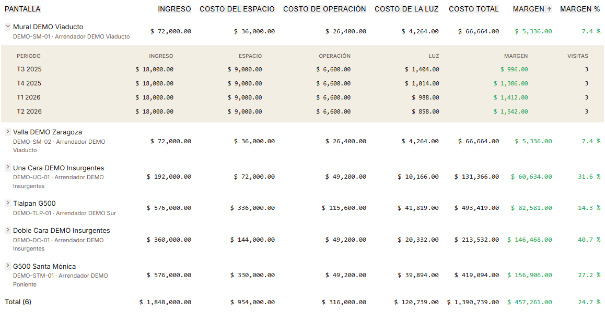
El pie no totaliza todas las columnas, y las que deja en blanco las deja a propósito.
Las columnas que son un promedio o un cociente —como el margen por metro cuadrado— no se pueden sumar: el promedio de los cocientes de las filas no es el cociente del total, porque cada pantalla tiene otra superficie. Un número ahí sería una cifra que no es de nadie.
---
| Lo que ves | Qué pasó | Qué hacer |
|---|---|---|
| «El registro ya existe» al guardar un recibo de luz | Ya hay un recibo de ese predio, ese mes y ese medidor | Comprueba si ya lo capturaste. Si es un segundo medidor, anota su número y vuelve a intentar |
| «sin asignar» en un contrato o comprobante | Ese documento no tiene razón social. Normal en todo lo anterior al 17 de septiembre | En contratos, asígnala (apartado 4.1). En comprobantes emitidos, se queda así |
| «Razon social no disponible» | El documento sí tiene razón social, pero la pantalla no acabó de cargar su nombre | Recarga la pantalla |
| El reporte dice que no hubo movimiento en el periodo | Ninguna pantalla tuvo ingreso, ni renta, ni visitas en ese rango | Comprueba primero las fechas. Si son correctas, es que ese periodo está realmente vacío |
| El reporte dice que no se pudo calcular | La pantalla no recibió respuesta, o la respuesta vino con error | Vuelve a intentar. Si se repite, avisa a quien administra tu instalación |
| El sistema te pide tu contraseña al asignar la razón social de un contrato | Es el candado de los cambios sensibles | Tecléala. Si no tienes contraseña porque entras con Google, pídesela a tu administrador |
| Te dice que ya contestaste el cuestionario de bienvenida | Ya existe al menos una razón social | Ve a «Razones sociales» a cambiar lo que haga falta |
| «Esta cuenta entra con Google…» al intentar entrar | A esa cuenta se le cerró la entrada por contraseña | Entra con «Continuar con Google» (apartado 1.3) |
| «Ver y decidir la actualización … está reservado a quien tenga el permiso de Administración → ver» | Tu cuenta no tiene permiso de Administración | Pídeselo a quien administra los roles de tu organización |
| «Ver y abrir tickets de soporte está reservado a quien tenga el permiso de Administración → ver» | Lo mismo, en la tarjeta de soporte | Pídele a esa persona que abra el ticket por ti (apartado 7) |
| «No se pudo cargar el estado de la actualizacion» o «No se pudieron cargar tus tickets de soporte» | La tarjeta no recibió respuesta | Recarga. Si se repite, es de quien opera el servidor, no de tu organización |
| «…el actualizador no pudo leer el digest de la imagen…» | Esta instalación no puede instalar nada hasta que alguien lo revise | Avisa a quien opera el servidor. No es algo que se arregle desde la pantalla |
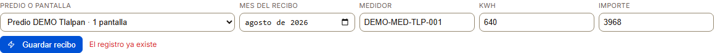
Cada perfil ve solo lo que le toca.
| Si no encuentras… | Te falta el permiso de… |
|---|---|
| «Razones sociales» | Administración |
| la pantalla de reportes | Finanzas |
| la pantalla de consumo de luz | Operaciones |
| las tarjetas «Actualizaciones» y «Soporte» dentro de «Administración» | Administración |
Pídeselo a quien administra tu organización.
---